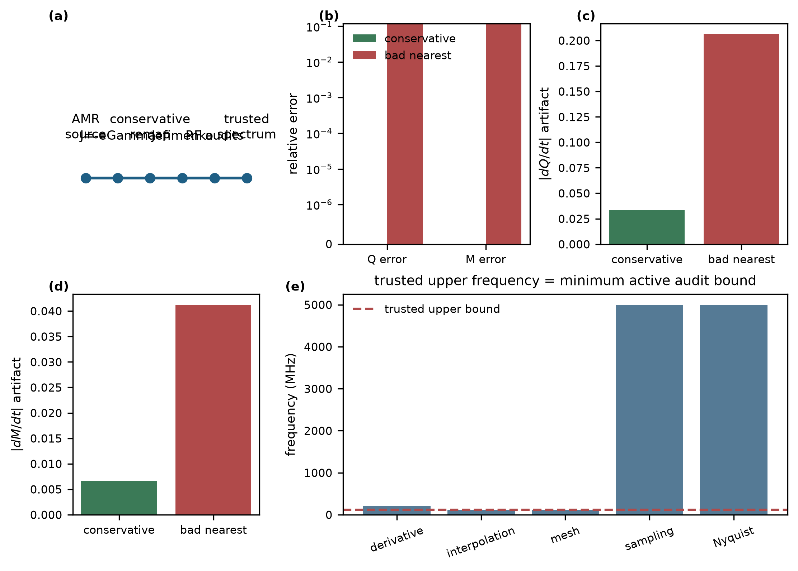
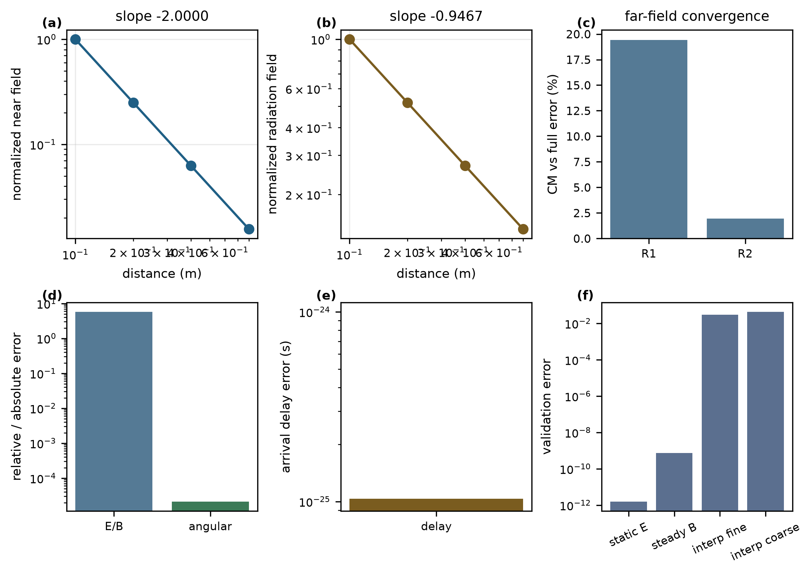
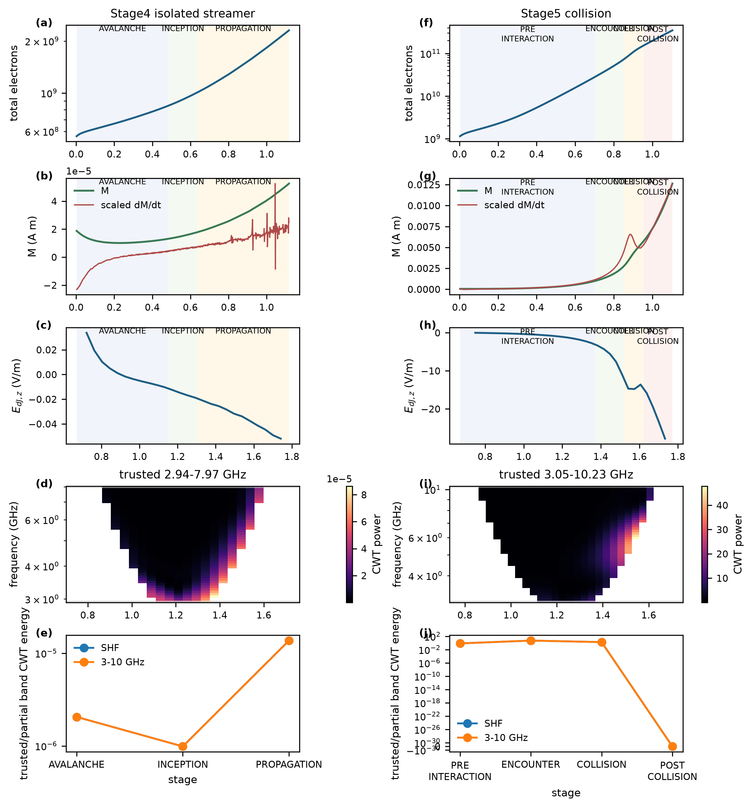
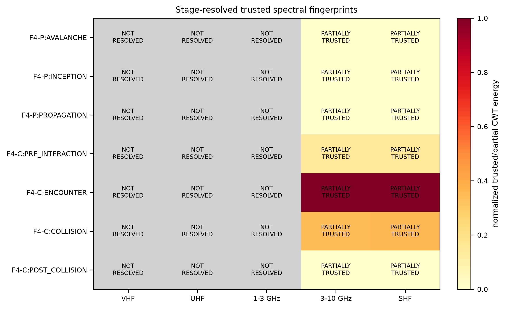

本报告汇总Stage F1-F4的真实输出，用于评估“原生宽频电磁辐射仿真”在未来投稿论文中的图件潜力。Stage F已经建立守恒可信源、完整Jefimenko场求解、频谱可信带审核和阶段分辨归因pilot，但当前仍属于development/smoke-level validation，不是最终实验校准仿真。
关键限制：没有用zero padding、人工静态尾段或UNTRUSTED频带生成物理结论。Stage E三维源仍非正式continuity-consistent scientific RF source，因此Fig. F5标记为DATA_INSUFFICIENT。

Conservation-aware RF trustworthiness framework for streamer-radiation simulations
图F1 守恒约束的射频源可信度框架。该图展示从等离子体源项、连续性一致电流、保守重映射、Jefimenko积分到频谱可信区间判定的完整链路，并用受控算例说明非保守重映射会在时间导数中引入伪射频信号。
保守重映射在受控AMR测试中保持Q和M相对误差为0，而bad nearest重映射产生约0.113的Q/M误差。对应的dQ/dt artifact从0.03339增至0.2062，dM/dt artifact从0.006678增至0.04124。
非守恒后处理足以制造人工RF；因此后续频谱必须先通过源项守恒、连续性和可信频带审核。
可以支撑RF后处理需要守恒门控和可信频带门控的论文方法结论。
这些数值来自controlled/synthetic validation，不能被解释为真实放电频谱强度。
方法贡献

Validation of the full Jefimenko electromagnetic-field solver
图F2 完整Jefimenko电磁场求解器验证。图中给出静电近场、稳恒电流磁场、辐射场距离标度、电流矩近似与完整Jefimenko积分、E/B关系和传播延迟误差。
近场距离斜率为-2.0000，辐射项斜率为-0.9467。角向误差为2.13e-5，E/B相对误差为5.71%，传播延迟误差为1.03e-25 s。电流矩近似误差从R1的19.4%降至R2的1.93%。
在远场条件改善时，电流矩近似向完整Jefimenko解收敛；完整积分保留了空间源分布和延迟传播信息。
可以支撑完整Jefimenko求解器和远场电流矩近似收敛性的数值验证结论。
不能声称电流矩在近场或任意观测距离均可替代Jefimenko积分。
数值验证

Temporal correspondence between discharge evolution and trusted radio-frequency emission
图F3 放电演化与可信射频辐射的时间对应关系。左列为Stage4单流注传播，右列为Stage5高场碰撞窗口；每列依次给出放电诊断、电流矩、远场辐射波形、CWT时频图和可信频带能量。
Stage4在avalanche、inception和early propagation期间均出现处于2.94-7.97 GHz可信区间内的可解析辐射活动。Stage5在encounter/collision/post-collision窗口中伴随快速current-moment变化，并在3.05-10.23 GHz可信区间内产生增强的GHz/low-SHF响应。
快速电流矩变化控制远场主要辐射时序；碰撞/相互作用窗口比平滑早期传播更容易产生高频时间结构。
可以支撑GHz/low-SHF子区间与早期传播和碰撞窗口存在时间对应关系。
VHF/UHF由于当前时间窗不足，没有得到可解释的stage attribution；不能写成传播主要产生VHF，也不能写成collision产生全部GHz辐射。
核心主图

Stage-resolved trusted spectral fingerprints of microgap discharge dynamics
图F4 微间隙放电阶段分辨的可信频谱指纹。矩阵仅对通过RFTrustReport的频带或其重叠子区间显示能量；未可信频段以灰色NOT RESOLVED显示。
当前可信结果集中在GHz/low-SHF子区间。VHF、UHF和1-3 GHz均为NOT_RESOLVED，这表示时间窗和可信频带不足以归因，而不是证明这些频段没有辐射。
该图把stage mask、CWT能量和RFTrustReport合并，防止把不可解释频段误读为低能量或无辐射。
可以支撑Stage F当前只完成GHz/low-SHF子区间pilot归因的边界清晰结论。
不能建立普适的stage-frequency阈值，也不能从未解析频带推断物理缺失。
重要机制支撑
Three-dimensional polarization and radiation characteristics
FIG_F5_STATUS = DATA_INSUFFICIENT
F3已经验证polarization和radiation-direction算法能力，但Stage E三维source仍是drift-only历史输出，缺少continuity-consistent 3D scientific J_RF、source time series、RFTrustReport和far-field audit的完整闭环。因此本报告不生成Fig. F5物理结果图。
暂不建议使用。
| dataset | stage | VHF | UHF | 1-3 GHz | 3-10 GHz | SHF |
|---|---|---|---|---|---|---|
| F4-P | AVALANCHE | NOT_RESOLVED | NOT_RESOLVED | NOT_RESOLVED | PARTIALLY_SUPPORTED | PARTIALLY_SUPPORTED |
| F4-P | INCEPTION | NOT_RESOLVED | NOT_RESOLVED | NOT_RESOLVED | PARTIALLY_SUPPORTED | PARTIALLY_SUPPORTED |
| F4-P | PROPAGATION | NOT_RESOLVED | NOT_RESOLVED | NOT_RESOLVED | PARTIALLY_SUPPORTED | PARTIALLY_SUPPORTED |
| F4-C | PRE_INTERACTION | NOT_RESOLVED | NOT_RESOLVED | NOT_RESOLVED | PARTIALLY_SUPPORTED | PARTIALLY_SUPPORTED |
| F4-C | ENCOUNTER | NOT_RESOLVED | NOT_RESOLVED | NOT_RESOLVED | PARTIALLY_SUPPORTED | PARTIALLY_SUPPORTED |
| F4-C | COLLISION | NOT_RESOLVED | NOT_RESOLVED | NOT_RESOLVED | PARTIALLY_SUPPORTED | PARTIALLY_SUPPORTED |
| F4-C | POST_COLLISION | NOT_RESOLVED | NOT_RESOLVED | NOT_RESOLVED | PARTIALLY_SUPPORTED | PARTIALLY_SUPPORTED |
当前Stage F是否已经证明“VHF/UHF/GHz分别来自哪个放电阶段”？PARTIAL。 已经支持GHz/low-SHF子区间与Stage4早期传播及Stage5 encounter/collision窗口的时间关联；VHF、UHF和1-3 GHz仍未解析。
RF trustworthiness framework贡献评级：methodological contribution。 最强方法证据是保守重映射、Jefimenko解析验证、RFTrustReport和current-moment/Jefimenko一致性。最强物理证据是Stage5 collision window在可信GHz/low-SHF子区间内的增强响应。
正式论文前必须重跑：更长物理有效VHF/UHF窗口、正式mesh sensitivity、continuity-consistent 3D source与polarization/direction case、实验/Stage B约束几何和电压。可直接保留的方法验证：F1 remap trust、F2 Jefimenko analytic validation、F3 FFT/CWT/trust synthetic validation。